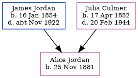

Louisa Bennett (née Jordan) 1876 - 1968
[ Home ] | [ Calendar ] | [ Surnames Index ] | [ Census Index ] | [ Family History ]The child of James Jordan (a horse keeper) and Julia Culmer, Louisa Jordan, the second cousin twice-removed on the mother's side of Nigel Horne, was born in Faversham, Kent, England on Jul 30, 18761,2 and married Charles Bennett (a brewer's drayman with whom she had 4 children: Charlotte Priscilla, Charles James, Frederick Arthur and Margaret D Elizabeth, along with 1 surviving child) at St Mary Of Charity in Faversham on Feb 23, 19014.
During her life, she was living at 2 Mill Place in Faversham on Apr 3, 18815; at Claremont Place, Canterbury, Kent, England on Mar 31, 19017 and on Apr 2, 19116; and at 4 Vicarage Street in Faversham on Sep 29, 19391.
She died on May 29, 1968 in Sittingbourne, Kent, England3.
Parents
- James was born on Jan 16, 1854
- Julia was born on Apr 17, 1852
Children
- Charlotte Priscilla was born on May 20, 1902
- Frederick Arthur was born on Oct 3, 1906
- Margaret D Elizabeth was born on Jun 1, 1909
Citations
- 1939 Register - Findmypast (was the wife of the head of the household)
- England & Wales births 1837-2006 - Findmypast
- England & Wales deaths 1837-2007 - Findmypast
- England & Wales Marriages 1837-2005 - Findmypast
- 1881 England, Wales & Scotland Census - Findmypast (was age 4 and the daughter of the head of the household)
- 1911 Census for England & Wales - Findmypast (was age 34 and the wife of the head of the household)
- 1901 England, Wales & Scotland Census - Findmypast (was age 24 and the wife of the head of the household)
Media
Louisa Jordan

Whitstable Times and Herne Bay Herald - 9 Mar 1901

England & Wales births 1837-2006 - BMD/B/1876/3/AZ/000311/039
England & Wales marriages 1837-2005 - BMD/M/1901/1/AZ/000140/179
1939 Register - TNA-R39-1716-1716A-013-21
1911 Census for England & Wales - GBC/1911/RG14/04322/0293/2
England & Wales deaths 1837-2007 - BMD/D/1968/2/AZ/000069/068
1901 England, Wales & Scotland Census - GBC/1901/0005479879
Kent marriages and banns - GBPRS/CANT/M/94027382/2
Kent marriages and banns - GBPRS/CANT/M/94084803/2
Family Tree
Generated by ged2site. Last updated on Jun 11, 2024